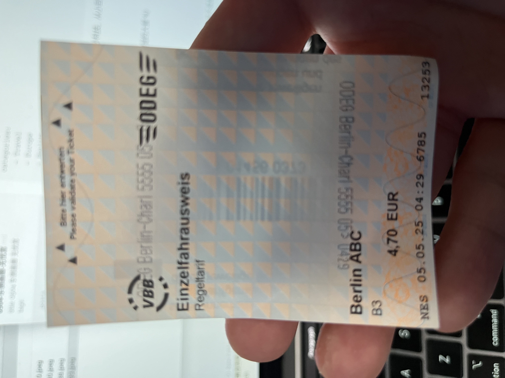
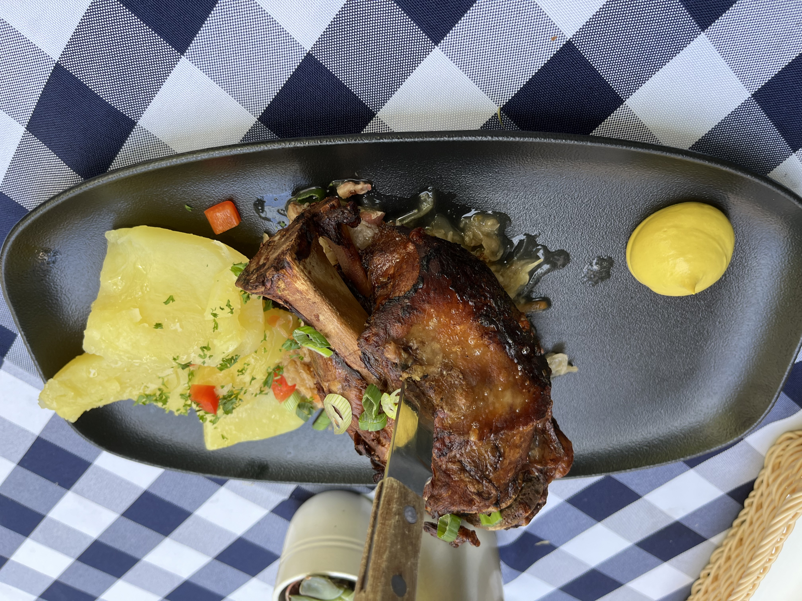
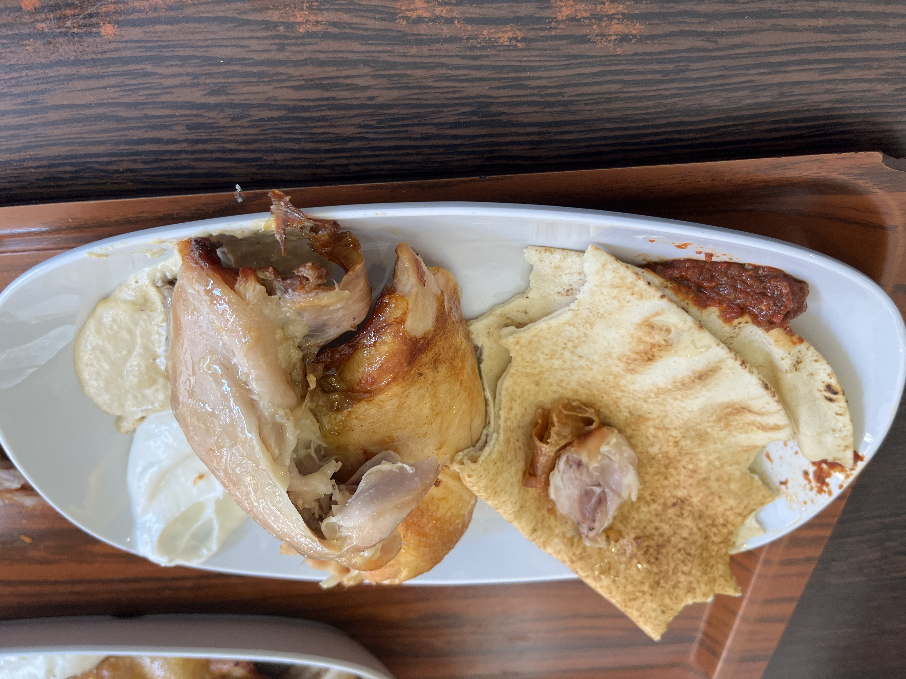
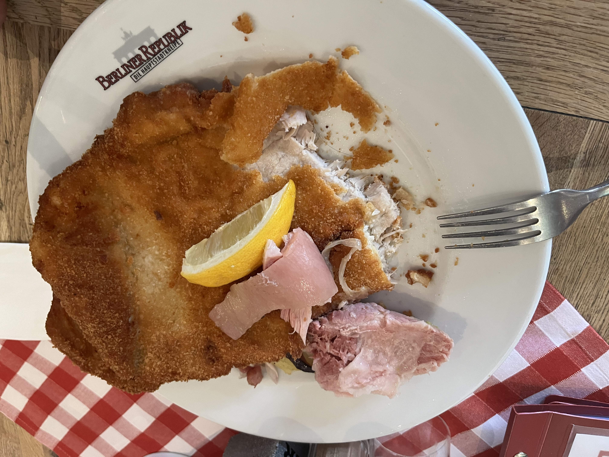

柏林啊，多少伤痛多少历史，多少腾飞又多少沉寂，从小到大一直被大人念叨，科技严谨。这次终于有机会浮光掠影地看一看它，近距离的感受这座城市。

Berlin铁路勾连机场市中心，很是方便，购车票也挺方便的，问题就是不清楚要买哪一张，需要问人。有点难堪的是呆了三天后，走的时候还是不知道咋买，幸好旁边大哥很是熟练，在我初试未果迅速让位，他顺利出票后，也乐得帮我走下流程。想想德奥这几天，分别都是遇到了一次查票，想想已经乘了10次左右的火车trum，确实40欧的罚款比较合适，再轻的话就不会买票了。
去的时候，对面埃及长相的小姐姐优雅娴静，简简单单一件夹克，专注打字，不着一句，尽显风流。稍后带上眼镜眺望窗外，暖暖的阳光打在她的脸上，凹陷的眼窝配上镜腿的阴影，更显立体。手指放在唇边，高贵的单纯，静穆的伟大。我温柔注视着，险些误了火车。
德国大街上中学生穿的很朴素啊，路上小姐姐也是全靠颜值打，很少能看到穿着fancy、正式的人，大多是单色衣服，偏爱黑色。或许是比较冷的缘故吧，很少看到有人在坐在街边吃冰淇淋，倒不是说吃冰淇淋的少，而是有些走路时、有些在商场里面吃，街边桌上大多是喝酒的人，甚至走路也喝。这和vienna、paris挺不一样的，这些地方很少看到有人走路吃东西，paris在吃饭的时候会喝酒，更多的是wine而不是啤酒。可惜现在酒量甚浅，一点都不敢尝试。
beilin和paris是两种气息。不同于巴黎，这边周末grocery store是真不开门，万幸餐馆还开门，只是服务态度更简单粗暴些。berlin的街头艺术也更多些，蛮多人当街拉小提琴、吹奏小号等。更别提柏林墙上的涂鸦了，作者甚至留下姓名联系方式，这我是没想到的，有点不街头。细想下，也就是在paris没被人当街要钱了吧，vienna是直接要，berlin是找游客写下姓名捐助等，paris传言小偷多，不过我这五大三粗的倒是不惧。
说说几件逸事吧。去玩博物馆岛后在旁边巴洛克走廊上休息。旁边坐了位很年轻的阿拉伯妈妈带着俩孩子，惊叹于24 25年纪已经是4 5 岁孩子的母亲了。想要喂麻雀，结果来了只老鼠鬼鬼祟祟地在她看不到的地方把面包吃了。耳边响起一群女孩唱英文歌，emmmmm，德国女孩唱poker face一样需要练习，不够流畅顺滑。公园里有人在陪德牧玩耍，向水池里面扔球，结果扔到外面，高傲的德牧转头看了一眼扔到外面的球，又看了看主人，低下了头，表示自己不是傻子，扔歪了别想自己捡。这一幕着实把我看笑了。
在vienna留下了德奥菜品的糟糕印象，寻思着在这吃些正宗的德餐。well，没有提前做攻略，而是google map找了两家评分还可以的德餐随意吃了吃。不得不说其实还可以，烤出来猪肘子汁水还保存较多，外皮也好吃，emmm猪排去了腥味，还算能吃，不过比不上大脸鸡排啦。
最后说一些比较失望或者和之前印象不一样的点吧。正如Emile所说，they are different. 很多时候确实很轴啊，在博物馆检票的时候，我展示了学生卡，却仍被要求需要年限，好家伙，只好坐在那边慢慢找。结果网路不行，到他放我进去之前也没找到成绩单和在读证明。这边机场的安检也是如兴芝姐所说～20min，不像巴黎那个廉航安检，这个完全不是人多造成的，单纯是严格，一个人一个人地过，那能快得了吗。初到柏林还好，气温能接受，周末降温后就有些过低了，五月初了，还在4 5 度徘徊，日间气温都不超过15度，身着冲锋衣的我实在是扫不了街。服务员挺不称职的，去了两家德国馆子，英语说得倒是没问题，上菜也还行，但是tape water没有就算了，饭后收盘子、结账十分缓慢，眼中根本没有我这一号人，关键是东西没有便宜到哪去呀，态度还这般。后来去的那家点单都找不到服务员，结账也得盼着她来，更别提拉着个脸的态度来，颇为抽象。说实话，不如土耳其烤鸡好吃。柏林也是有流浪汉，路上的褥子也不知能不能抵御这般寒冷。从兴芝姐那了解到年薪5w欧都是中产以上了，这还是berlin，那还是美国赚的多啊。一个还在读书的人赚的都和中产一样了，还是不合理的。
  